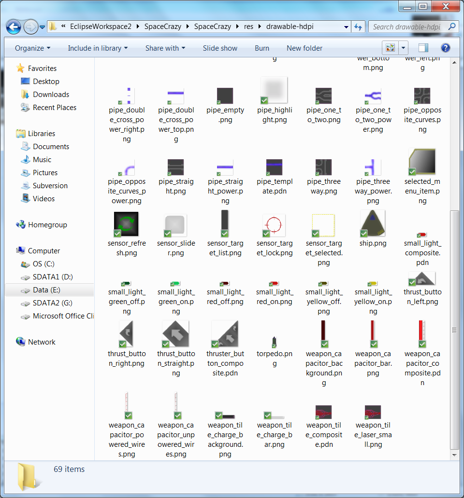
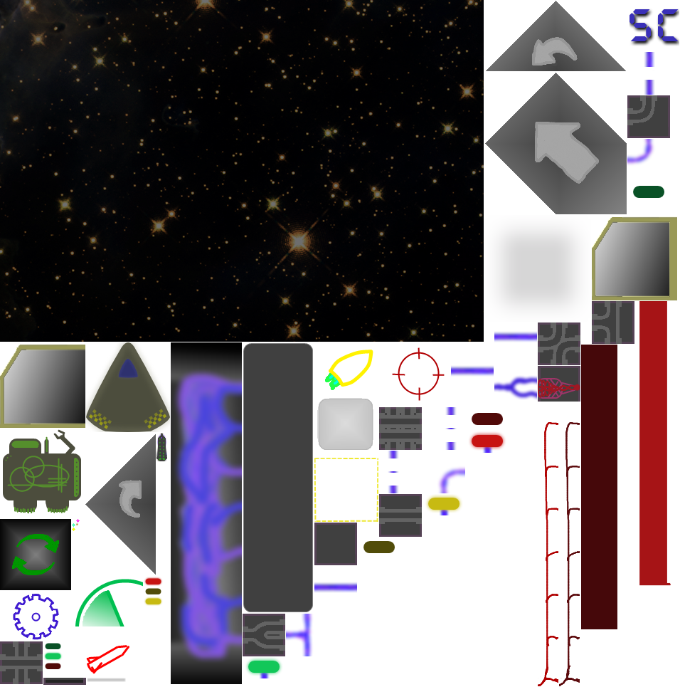
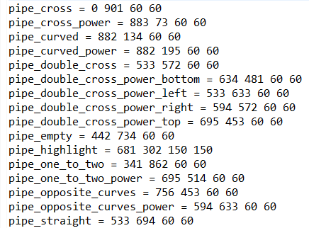
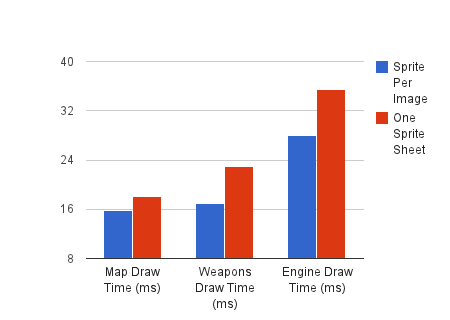

August 8, 2013Optimizing drawing with Sprite Sheets (Android)I hear lots of talk in game dev about how compiling all of your images into a single sprite sheet, instead of having one file for each image, can speed up your game. I'm well into alpha development of Space Crazy and figured it would be a good time to move over to using a single sprite sheet. I grabbed Nick Gravelyns Sprite Sheet Packer and in moments I had gone from a directory full of single images: to a single sprite sheet, and a description file that defines the source location for each sprite:  Integrating it with my game was a bit of work due how I had setup the drawing, but I sorted it soon enough. There was one immediate bonus in that when adding new images I would no longer have to clean the project to get the resource definitions to update properly. This, however, came at a cost of having to run the sprite sheet packer instead, as well as moving from strongly typed resource names to strings. Both of these drawbacks could probably be solved with some sort of build targets (I have never done this with eclipse and am not sure how it would work). With the refactor done it was time to get some testing underway. Before I implemented the change I worked in a quick and dirty profiler that would allow me to do some manual (ugh gross, yea I'm lazy) testing. I rolled my repository back and forward with the many sprites vs single sprite model testing the speed on 3 screens of my game. Here are the averages: If you are reading too quickly or think I have made a mistake in my labels take a closer look and realize something strange is going on. It turns out that for Space Crazy drawing with individual sprites is actually faster! I think the engine screen comparison tells the best tale as it is the slowest (it is drawing the most stuff). Pushing all of our sprites into a single sheet actually causes this screen to operate 7.5 ms slower! That's an increase of over 25%! This result comes totally unexpected to me and clearly needs a little digging to figure out what the gains are supposed to be and why I am not getting them. Perhaps it is because the Android system is good with individual sprites, but I don't really have the time to find out. I am going to roll back my source and keep hustling my game along. Before I rollback to my previous revision of the code here are some caveats that could be why I didn't see a speed boost: - Testing was manual, and on a real device. This should not be an issue as I was able to develop a testing pattern that gave very consistent results. I even re-did the tests due to my surprise with the initial results. - With multiple sprites I was drawing to the android canvas using different drawBitmap calls in different situations, but with the single sprite I always had to use the source rectangle and destination rectangle technique which could be slower. In addition the code setting up the draw call was also changed to accommodate this (though I wouldn't expect this extra setup to have any significance). - The sprite packer actually increased the total size of the images. It doesn't seem to have taken advantage of transparency's, and it leaves a little extra space in the bottom corner. This would require more memory but shouldn't affect the draw speeds so I don't see why this would slow it down. In the future I may create a test project to take a more scientific and targeted look at this. For now I would love to hear about your experiences with sprite sheets. |
There and back again, an OOP tale Basic C# Auto Updater Pillars of Eternity is broken. A Silly Mistake Tweaking The Farseer Engine London Anime and Gaming Convention Sword Controls Update Texture Bleeding MoonBus Post Mortem Optimizing drawing with Sprite Sheets (Android) Space Crazy Prototype Android resource scaler my history with programming |
contact@hernblog.com
Follow @IanMakesGames